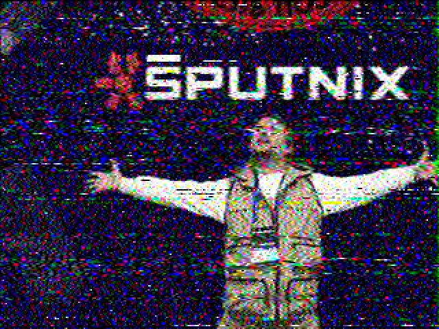
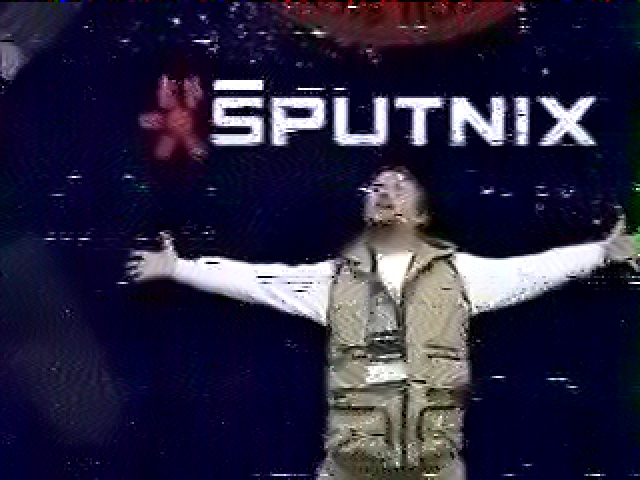
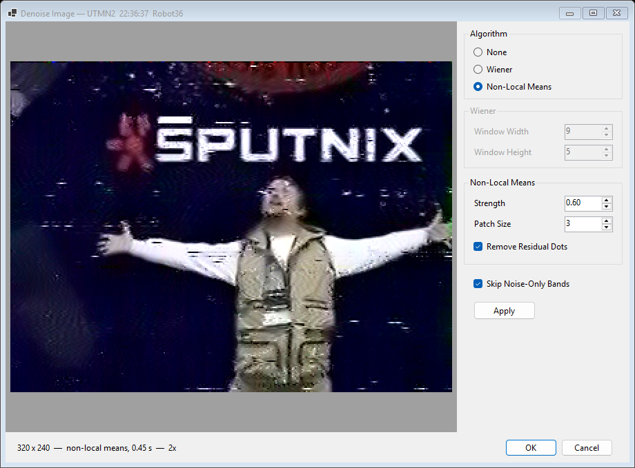

Receive SSTV Images
Some satellites transmit SSTV (Slow-Scan Television) images over an FM downlink. SkyRoof decodes these images with its built-in decoder, right inside the program — there is no need for an external SSTV program, a Virtual Audio Cable, or an output stream. The decoded image is built up line by line in the Telemetry panel as the satellite passes overhead.

Supported Modes
The decoder supports the YCrCb mode family used by satellites:
- Robot 36 and Robot 72;
- PD 50, PD 90, PD 120, PD 160, PD 180, PD 240, and PD 290.
The mode is detected automatically from the VIS header and the sync cadence of the received signal, so you do not have to select it by hand. The RGB Martin and Scottie modes, which are rarely used by satellites, are currently not supported.
Decoding an Image
Open the Telemetry panel from the View / Telemetry menu.
Select the satellite in the Satellite Selector on the toolbar. If it is not in the current group, add it using the Satellites and Groups dialog.
Select the satellite's SSTV transmitter. You can select it in the Satellite Transmitters panel, or by clicking on its label on the frequency scale. The decoder follows the transmitter selection, so make sure the SSTV transmitter is the one highlighted in the Satellite Transmitters panel.
Make sure the SDR is running and tuned to the satellite. The decoder uses the same Doppler-corrected passband as the receiver, so the satellite's signal must be visible on the waterfall at the tuned frequency.
When the satellite is above the horizon and its signal starts to appear, the decoder detects the SSTV transmission and begins building the image. Each image appears as a node in the tree, under the pass node, and updates in place as new scan lines arrive. Select an image node to watch it build up in the detail pane on the right, together with a META section that shows the satellite, transmitter, mode, whether the VIS header was decoded, the number of rows received, and the decoding status.
There is nothing to start or stop manually: the decoder rides through short signal fades and finalizes each image when it is complete or the signal is lost. A satellite whose transmitter alternates between telemetry and SSTV (such as UmKA-1) is handled automatically — the telemetry frames and the SSTV images both appear in the same panel.
Denoising an Image
A satellite SSTV picture arrives over an FM link, and once the signal drops toward the FM threshold the picture fills with coloured speckle. SkyRoof applies a mild Wiener filter to every decoded image automatically, which is what you see while the image is building. When a pass was marginal you can do considerably better afterwards: right-click a finished image and choose Denoise Image....
| As received | After non-local means |
|---|---|
 |
 |
The command becomes available once an image is complete, because the filter works on the raw reconstruction that is stored with the finished image.

The dialog shows the picture at double size — the speckle it removes is one to three pixels across and is hard to judge at 1:1. Roll the mouse wheel over the picture to zoom, from 1:1 up to the point where it fills the pane; enlarging or maximizing the window raises that limit, so maximizing gives you a close look at fine detail.
Choose the algorithm:
- None — the raw reconstruction, with no filtering at all. Note that this is not the image you started with: the automatic Wiener filter is switched off too, so this is the noisiest of the three.
- Wiener — the same filter the decoder applies automatically. Cheap, and gentle on smooth areas, but it judges each pixel from its immediate neighbourhood alone, so it thins fine detail such as text and thin lines.
- Non-local means — much slower, but far better on a noisy pass. Instead of averaging a pixel with its neighbours, it searches the surrounding area for patches that look like the one being cleaned and averages those. Repeated fine structure — lettering, edges, texture — therefore reinforces itself instead of being smoothed away. This is the one to reach for.
Only the settings of the selected algorithm are enabled. For non-local means:
- Strength — how much noise the filter assumes is present. Higher removes more speckle but starts to flatten real detail; 0.40 to 0.80 suits most pictures, and 1.60 and above is usually too much. The best value depends on the pass, which is why the filter is manual rather than automatic.
- Patch Size — the size of the patches compared against one another. 3 is a good default.
- Remove Residual Dots — a second pass that clears isolated specks the first pass leaves behind. An isolated speck resembles nothing else in the picture, so nothing matches it and the plain filter preserves it faithfully.
For the Wiener filter, Window Width and Window Height set the size of the neighbourhood it averages over. A larger window removes more noise and loses more detail.
Skip Noise-Only Bands applies to both algorithms and is on by default. Where the signal dropped below the FM threshold the picture carries bands of pure noise with no image in them at all. Averaging those bands turns them into a soft grey wash that reads as a blurred picture rather than as absent signal, so by default they are left exactly as received and the filtering is concentrated where there is a picture to improve. Turn this off for a very weak pass in which you can see there is a faint picture buried in the noise — the program cannot always tell the two cases apart, but you can.
Press Apply to filter the picture, and try as many settings as you like: every Apply starts again from the original, so filters never pile up on one another and None always brings back exactly what was received. OK keeps what is on screen and replaces the automatically saved PNG file; Cancel leaves the image as it was.
Saved Images
Each finalized image is saved automatically as a PNG file, with a JSON sidecar holding its metadata, in the SstvImages subfolder of the data folder. You can also right-click an image in the detail pane and choose:
- Save As... — save the image to a location of your choice. This writes the image as it is currently shown, so a denoised picture is saved denoised;
- Copy — copy the image to the clipboard;
- Denoise Image... — clean up a noisy picture, as described above;
- Open in Viewer — open the automatically saved PNG file in the program that Windows associates with PNG images, where you can see it at full size. This command is available only after the image has been finalized and saved, so it stays grayed out while an image is still being received.